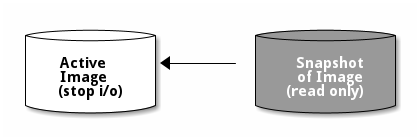
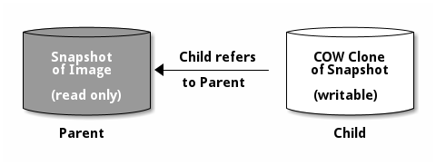
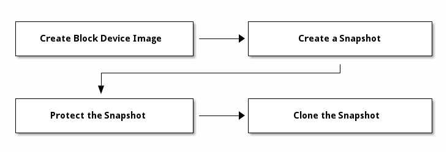

Notice
This document is for a development version of Ceph.
快照
一份快照是某映像在一个特定时间点（一个 checkpoint ）的一份只读的逻辑副本。
Ceph 块设备的一个高级功能就是你可以为映像创建一系列快照来保留其在不同时间点的状态历史；
Ceph 还支持分层快照，让你快速、容易地克隆映像（如 VM 映像）。
Ceph 块设备的快照功能可以用 rbd 命令和多个高级接口来管理，
包括 QEMU 、 libvirt 、 OpenStack 和 CloudStack 。
Important
要使用 RBD 快照功能，你必须有个运行着的集群。
Note
因为 RBD 并不知晓映像（卷）内的文件系统， 如果没有在挂载着（捆绑着）它的操作系统内协调的话， 快照就不是崩溃一致（ crash-consistent）的。 故此，我们建议在拍快照前先暂停或停止这个映像上的 I/O 操作。 如果这个卷包含文件系统，在拍快照前这个文件系统内部必须处于一致状态。 在不一致的点拍下的快照需要完成 fsck 之后才能挂载。 可以用 fsfreeze 命令中止 I/O ， 命令细节请参考 fsfreeze(8) 手册页。 对于虚拟机， qemu-guest-agent 可在创建快照时自动冻结文件系统。

Cephx 注意事项
启用了 cephx 时（默认的），你必须指定用户名或 ID 、
及其密钥环的路径，详情见用户管理。
你也可以用 CEPH_ARGS 环境变量来避免重复输入下列参数。
rbd --id {user-ID} --keyring=/path/to/secret [commands]
rbd --name {username} --keyring=/path/to/secret [commands]
例如：
rbd --id admin --keyring=/etc/ceph/ceph.keyring [commands]
rbd --name client.admin --keyring=/etc/ceph/ceph.keyring [commands]
Tip
把用户名和密钥写入 CEPH_ARGS 环境变量，
省得每次手动输入。
快照基础
下列过程演示了如何用 rbd 命令创建、罗列、和删除快照。
创建快照
用 rbd 命令创建快照，要指定 snap create 子命令、
外加存储池名、映像名。
rbd snap create {pool-name}/{image-name}@{snap-name}
例如：
rbd snap create rbd/foo@snapname
罗列快照
要列出一映像的快照，指定存储池名和映像名。
rbd snap ls {pool-name}/{image-name}
例如：
rbd snap ls rbd/foo
回滚快照
要用 rbd 命令回滚到某一快照，指定 snap rollback 选项、
存储池名、映像名和快照名。
rbd snap rollback {pool-name}/{image-name}@{snap-name}
例如：
rbd snap rollback rbd/foo@snapname
Note
把映像回滚到一快照的意思是， 用快照中的数据覆盖映像的当前版本， 这个回滚过程花费的时间随映像尺寸增长。 从快照克隆要快于回滚到某快照， 这也是回到先前状态的首选方法。
删除快照
要用 rbd 删除一快照，指定 snap rm 选项、存储池名、映像名和快照名。
rbd snap rm {pool-name}/{image-name}@{snap-name}
例如：
rbd snap rm rbd/foo@snapname
Note
Ceph 的 OSD 异步地删除数据，所以删除快照后不会立即释放磁盘空间。
清除快照
要用 rbd 删除一映像的所有快照，指定 snap purge 选项和映像名。
rbd snap purge {pool-name}/{image-name}
例如：
rbd snap purge rbd/foo
分层
Ceph 支持创建某一设备快照的很多写时复制（ COW ）克隆。 分层快照使得 Ceph 块设备客户端可以很快地创建映像。 例如，你可以创建一个块设备映像，其中有 Linux VM ； 然后拍快照、保护快照，再创建任意多写时复制克隆。 快照是只读的，所以简化了克隆快照的语义——使得克隆很迅速。

Note
这里的术语“父”和“子”意思是一个 Ceph 块设备快照（父）， 和从此快照克隆出来的对应映像（子）。 这些术语对下列的命令行用法来说很重要。
各个克隆出来的映像（子）都存储着对父映像的引用， 这使得克隆出来的映像可以打开父映像并读取它。
一个快照的 COW 克隆和其它任何 Ceph 块设备映像的行为完全一样。 克隆出的映像没有特别的限制，你可以读出、写入、克隆、调整其大小， 然而快照的写时复制克隆引用了快照， 所以你克隆前必须保护它。下图描述了此过程。
Note
Ceph 仅支持克隆格式为 2 的映像
（即用 rbd create --image-format 2 创建的）。
内核客户端从 3.10 版开始支持克隆的映像。
分层入门
Ceph 块设备的分层是个简单的过程。你必须有个映像、必须为它创建快照、必须保护快照，执行过这些步骤后，你才能克隆快照。

克隆出的映像包含到父快照的引用、也包含存储池 ID 、映像 ID 和快照 ID 。包含存储池 ID 意味着你可以把一存储池内的快照克隆到别的存储池。
映像模板： 块设备分层的一个常见用法是创建一个主映像及其快照，并作为模板以供克隆。例如，一用户创建一 Linux 发行版（如 Ubuntu 12.04 ）的映像、并为其拍快照；此用户可能会周期性地更新映像、并创建新的快照（如在
rbd snap create之后执行sudo apt-get update、sudo apt-get upgrade、sudo apt-get dist-upgrade），当映像成熟时，用户可以克隆任意快照。扩展模板： 更高级的用法包括扩展映像模板，让它包含比基础映像更多的信息。 例如，用户可以克隆一个映像（如 VM 模板）、然后安装其它软件 （如数据库、内容管理系统、分析系统等等）、然后为此扩展映像拍快照， 拍下的快照可以像基础映像一样更新。
模板存储池： 块设备分层的一种用法是创建一存储池，其中包含作为模板的主映像、和那些模板的快照。然后把只读权限分给用户， 这样他们就可以克隆快照了，而无需分配此存储池内的写和执行权限。
映像迁移/恢复： 块设备分层的一种用法是把一存储池内的数据迁移或恢复到另一存储池。
保护快照
克隆品要访问父快照。如果哪个用户不小心删除了父快照，所有克隆品都会损坏。为防止数据丢失，必须先保护、然后再克隆快照。
rbd snap protect {pool-name}/{image-name}@{snapshot-name}
例如：
rbd snap protect rbd/my-image@my-snapshot
Note
你删除不了受保护的快照。
克隆快照
要克隆快照，你得指定父存储池、映像、和快照，还有子存储池和映像名。克隆前必须先保护它。
rbd clone {pool-name}/{parent-image}@{snap-name} {pool-name}/{child-image-name}
例如：
rbd clone rbd/my-image@my-snapshot rbd/new-image
Note
你可以把一存储池中映像的快照克隆到另一存储池。例如，你可以把一存储池中的只读映像及其快照当模板维护、却把可写克隆置于另一存储池。
取消快照保护
删除快照前，必须先取消保护。另外，你不能删除被克隆品引用的快照， 所以删除快照前必须先拍平此快照的各个克隆。
rbd snap unprotect {pool-name}/{image-name}@{snapshot-name}
例如：
rbd snap unprotect rbd/my-image@my-snapshot
罗列一快照的子孙
用下列命令罗列一快照的子孙：
rbd children {pool-name}/{image-name}@{snapshot-name}
例如：
rbd children rbd/my-image@my-snapshot
拍平克隆品映像
克隆来的映像仍保留了父快照的引用。要从子克隆删除这些到父快照的引用， 你可以把快照的信息复制给子克隆，也就是“拍平”它。 拍平克隆品的时间因快照尺寸而不同。要删除快照，必须先拍平子映像。
rbd flatten {pool-name}/{image-name}
例如：
rbd flatten rbd/new-image
Note
因为拍平的映像包含了快照的所有信息，所以拍平的映像占用的存储空间会比分层克隆品大。
Brought to you by the Ceph Foundation
The Ceph Documentation is a community resource funded and hosted by the non-profit Ceph Foundation. If you would like to support this and our other efforts, please consider joining now.